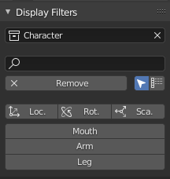
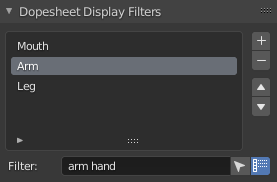

Dope Sheet and Graph Editor filters
The add-on will add a few tools in the side panel of the Dope Sheet and the Graph Editor to ease the process of filtering displayed properties.

Timeline
Dope Sheet Panel ‣ Sidebar ‣ View Tab
Graph Editor Panel ‣ Sidebar ‣ View Tab

Options
- Change the collection to display only properties from a specitif collection
- Use the search field to input custom names
- The remove button will clear all filters and turn on the Only show selected option.
- Next to the remove button, there are two options:
- Only show selected will display properties only for selected objects.
- Fuzzy/Multi-Word name filtering matches word snippets/partial words, instead of having to match everything. It breaks down the search string based on white-space placement. e.g. “lo ro” will filter all location and rotation, while “lc rt” will not work.
Filters
The add-on adds three filters by default, to display only the location, rotation or scale of the selected objects.
Under these default filters, the add-on adds custom filters, which you can manage on armature objects
Armatures and custom filters
Custom filters are managed on armature objects. Each armarture adds its own filters to the list.
Properties Panel ‣ Armature Data ‣ Dopesheet Display Filters

You can re-organize the filters with the up and down button; they will be sorted in the same order in the Dope Sheet and Graph Editor panel.
Each filter has two options:
- Only show selected will filter only among the selected objects.
- Fuzzy/Multi-Word name filtering matches word snippets/partial words, instead of having to match everything. It breaks down the search string based on white-space placement. e.g. “lo ro” will filter all location and rotation, while “lc rt” will not work.
Hint
To add filters if don’t have any armature, just add one to the scene.